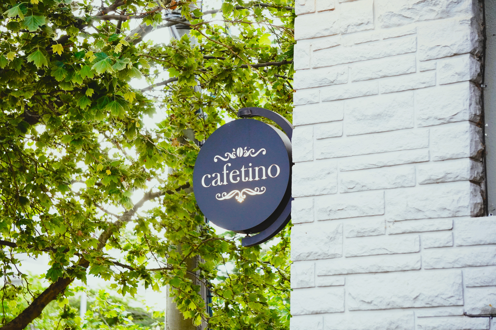
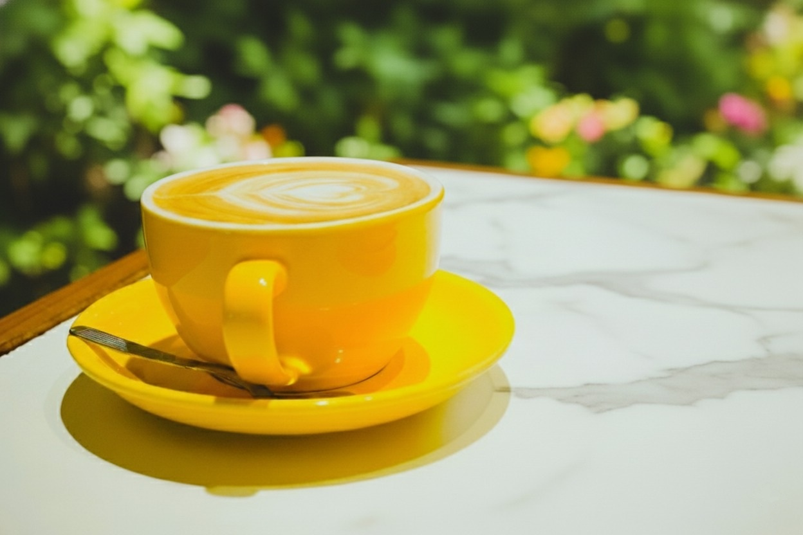
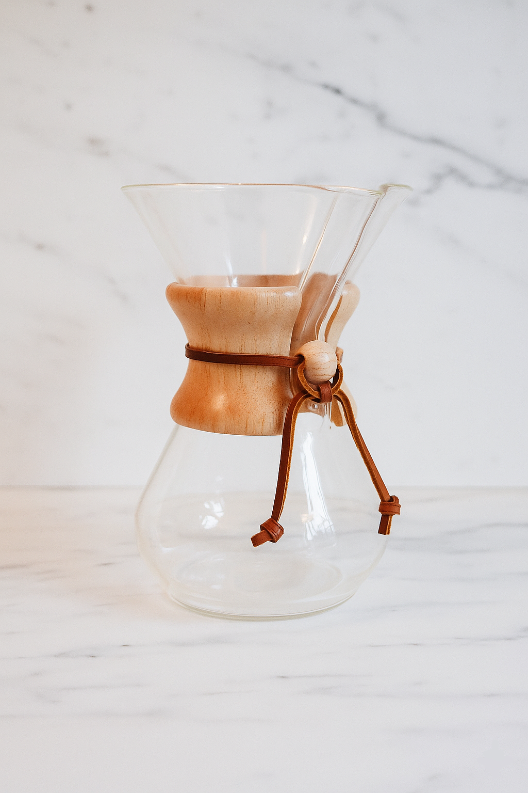
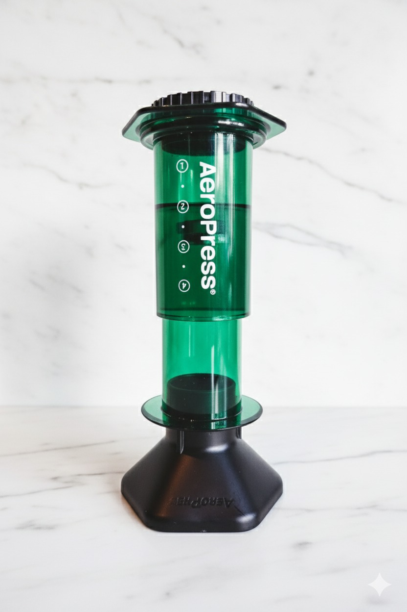
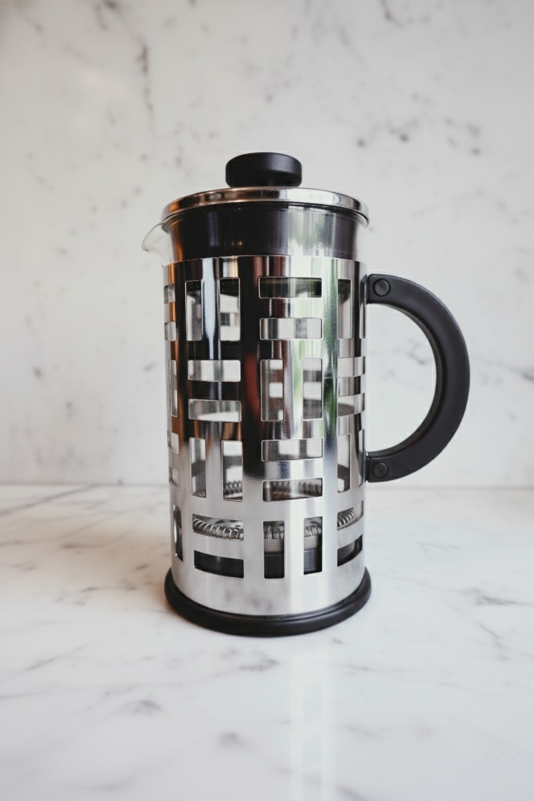

Nuestra historia
Cafetino es la primera cafetería de cafés especiales de General Pico, La Pampa. Nació con una idea simple pero poderosa: servir café especial.
Desde nuestra inauguración en 2018, en una fecha muy simbólica para los amantes del café —el 1° de octubre, Día Internacional del Café—, trabajamos con un mismo propósito: ofrecer una experiencia auténtica en cada taza
Colaboramos con productores que cultivan y cosechan con dedicación, seleccionando granos de origen cuidadosamente elegidos. Cada café refleja el esfuerzo conjunto entre quienes lo siembran, lo tuestan y quienes lo servimos con pasión.
Nuestro espacio fue pensado para ser cálido, acogedor y lleno de detalles. En Cafetino, cada espresso, filtrado o latte es una invitación a disfrutar del momento, a conectar con los aromas, los sabores y la cultura del buen café.

Contamos con un equipo apasionado y comprometido, que comparte un mismo objetivo: elevar la cultura cafetera en La Pampa y hacer de cada visita una experiencia memorable.
Cafetino no es solo una cafetería: es un punto de encuentro, una comunidad y el reflejo de una dedicación constante por hacer las cosas bien, todos los días.
Después de siete años de trabajo y crecimiento, seguimos expandiendo esta pasión. Muy pronto abriremos nuestra segunda sucursal, un nuevo espacio para continuar compartiendo lo que más nos gusta:
El placer de servir café especial de verdad.

La historia detrás de cada taza
En Cafetino creemos que un café especial comienza mucho antes de llegar a la taza. Cada grano tiene una historia: conocemos su origen, la finca donde fue cultivado, el productor y su proceso de beneficio.
Seleccionamos cafés con trazabilidad completa, porque entendemos que la calidad no es casualidad, sino el resultado de la pasión, el conocimiento y el respeto por el café.
Esta trazabilidad garantiza que cada variedad mantenga su identidad y características únicas, ofreciendo una experiencia sensorial coherente, transparente y de calidad superior.
En Cafetino, creemos que la verdadera calidad se construye con dedicación y respeto en cada paso del camino.

Del origen a tu taza: el viaje de nuestro café
Cada grano de café tiene una historia. Desde su origen en fincas seleccionadas por su altitud, suelo y clima, hasta el trabajo del catador, que garantiza su calidad y sabor únicos.
Luego, nuestro tostador transforma esos granos verdes en café tostado, resaltando lo mejor de cada lote.
Finalmente, el barista lo prepara con dedicación, para que cada sorbo en tu taza sea una experiencia auténtica: un café especial de verdad.

El tueste que da vida a nuestro café
Nuestro café es tostado por Puerto Blest, reflejo de una búsqueda constante por la calidad, el origen y la trazabilidad.
Hoy, con la apertura de nuestra segunda sucursal, seguimos apostando al mismo sueño con el que comenzamos: servir café especial.
En Cafetino, creemos que un gran café nace en el origen y se perfecciona en el tueste. Por eso, confiamos en Puerto Blest, referentes en cafés especiales en Argentina, para darle vida a nuestros granos.
Cada lote es cuidadosamente seleccionado, tostado y evaluado para garantizar una calidad constante, una trazabilidad real y un perfil sensorial excepcional en cada taza.
Trazabilidad
En Cafetino, creemos que un café especial comienza en el origen y termina en tu taza, pero su verdadero valor está en todo lo que sucede en el camino.
Cada lote que servimos cuenta con trazabilidad completa: conocemos la finca de donde proviene, cómo fue cosechado, procesado y tostado —por nuestros amigos de Puerto Blest— hasta llegar a las manos del barista que lo prepara.
Así garantizamos transparencia, calidad y una historia real detrás de cada sorbo.
Detrás de cada taza
En Cafetino, sabemos que detrás de cada taza hay un esfuerzo inmenso y una historia de dedicación. Se necesitan más de 300 kilos de cerezas de café para obtener apenas 46 kilos de café oro tostable.
Este proceso implica un trabajo arduo por parte de los productores, que con paciencia y pasión hacen posible que cada taza llegue a tus manos.
Valoramos ese esfuerzo y queremos invitarte a ser más consciente del increíble trabajo que hay detrás de cada sorbo.
La Rueda de sabores del catador de Café
Una guía sensorial para descubrir la esencia de cada taza

La Rueda de Sabores del Catador de Café (o Coffee Taster’s Flavor Wheel) es una de las herramientas más importantes en el mundo del café especial. Desarrollada por la Specialty Coffee Association (SCA) junto al World Coffee Research (WCR), permite identificar, describir y comunicar los aromas y sabores que encontramos en una taza de café.
¿Qué es y cómo se usa?
La rueda organiza los sabores y aromas en diferentes niveles que ayudan al catador a explorar con precisión las sensaciones que percibe durante una cata:
- Centro: categorías generales, como afrutado, floral o tostado.
- Anillo medio: subcategorías más específicas. Por ejemplo, dentro de “afrutado”: fruta seca, fruta cítrica o fruta tropical.
- Anillo externo: descriptores precisos, como limón, mango o ciruela pasa.
Durante una cata (o cupping), el catador utiliza esta herramienta para:
- Identificar las notas aromáticas del café seco y húmedo.
- Describir el sabor, cuerpo y retrogusto de la infusión.
- Comunicar los resultados utilizando un lenguaje común y estandarizado.
Principales grupos de sabores
- Florales: jazmín, lavanda, rosa.
- Frutales: cítricos (naranja, limón), tropicales (piña, mango), rojos (cereza, frutilla).
- Dulces: miel, caramelo, azúcar morena.
- Tostados: cacao, nuez, pan tostado.
- Especiados: canela, clavo, pimienta.
- Fermentados o vinosos: vino tinto, ron, whisky.
- Verdes o vegetales: hierba, pimiento, guisante.
- Defectos (indeseables): caucho, moho, tierra, ceniza.
Comprender la rueda de sabores es adentrarse en el arte sensorial del café, donde cada taza revela un universo de matices, historias y pasiones.
Nuestros Filtrados

Chemex
El diseño característico de la cafetera Chemex fue creado por el químico alemán Peter Schlumbohm en 1941. Su elegancia y precisión la convirtieron en un ícono del diseño moderno, reconocida por combinar ciencia y estética en una sola pieza.
Receta paso a paso
⏱️ 4 minutos | 1g café / 16g agua
- Pesar y moler el café (molienda media-gruesa).
- Colocar el filtro y humedecerlo con agua (94°C).
- Descartar el agua y agregar el café molido.
- Verter agua (94°C) hasta cubrir el café.
- Infusionar 30".
- Agregar agua lentamente en espiral.
- Dejar infusionar.
- Servir el café y disfrutar.

AeroPress
Creada en 2005 por Alan Adler, la AeroPress es un método versátil y rápido. Su sistema de presión logra un café intenso y balanceado, reduciendo la acidez.
Receta paso a paso
⏱️ 3 minutos | 1g café / 13g agua
- Pesar y moler el café (molienda media-fina).
- Colocar el micro filtro humedecido.
- Precalentar la AeroPress con agua (94°C).
- Agregar el café molido.
- Verter lentamente el agua (94°C).
- Revolver suavemente y esperar 1’.
- Presionar durante 20”.
- Servir el café y disfrutar.

V60
Diseñado por Hario en Japón, el V60 destaca por su forma cónica y espiral interna, que optimizan el flujo del agua y la extracción. Permite controlar todos los parámetros del vertido.
Receta paso a paso
⏱️ 4 minutos | 1g café / 16g agua
- Pesar y moler el café (molienda media).
- Colocar el filtro y humedecerlo con agua.
- Descartar el agua y agregar el café molido.
- Verter agua (94°C) hasta cubrir el café.
- Dejar infusionar 30".
- Agregar agua en forma lenta, pareja y en espiral.
- Dejar infusionar 3' y sacar el filtro.
- Servir el café y disfrutar.

Prensa Francesa
Un clásico de cuerpo completo. La prensa francesa utiliza un émbolo con filtro metálico para separar el café del agua, conservando aceites y sabores intensos.
Receta paso a paso
⏱️ 5 minutos | 1g café / 16g agua
- Pesar y moler el café (molienda gruesa).
- Precalentar la Prensa Francesa con agua.
- Agregar el café molido.
- Verter agua (94°C) hasta la mitad.
- Agregar agua hasta el borde. Dejar infusionar 3’.
- Agregar agua hasta el borde. Dejar infusionar 3’.
- Presionar con firmeza el émbolo.
- Servir toda la bebida y disfrutar.